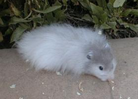
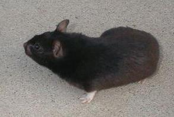

| Syrian hamsters have many nicknames - goldens, black bears, fancy hamsters, teddy bears, alien hamsters. Despite the wondrous array of colors, types and lengths (or absence) of fur, all these animals are exactly the same species, Mesocricetus auratus. As cute and cuddly as they may be toward people, they're not friendly with other hamsters, and as they mature, their instincts are to live alone. One of the most important things you can do for your hamster is to give him the living conditions his instincts demand. Syrians are solitary creatures. For that reason, Syrian hamsters must be housed one to a cage after the age of 6-8 weeks. Even brothers and sisters who played beautifully together when youngsters must be separated for their own safety and well-being. The stress of living with another poses great health risks. Even if they seem fine when you're watching, fights could be happening when you aren't. Worse, even the very first fight can be fatal. Things don't tend to escalate so much as to explode. Many unfortunate hamsters are killed or maimed horribly each year because some owners insist their hamsters are the exception to nature. In their native habitat, hamsters would live in solitary burrows, seeking one another only to mate. Domestic Syrians are only brought together for a closely and constantly supervised half hour or so on mating night. The male does not help to raise the young, and the female will not tolerate his presence during gestation or after the birth. The male has no interest or protective instincts toward the young, and can never be allowed access to them. Syrians must not only live singly, they must also play that way. Syrians cannot visit one another or play together, even in a space as large as a hamster-safe room. A squabble can turn deadly in the blink of an eye. Syrian hamsters cannot be housed with or allowed to play with hamsters of other species either, and of course they must be protected at all times from other pets. The only playmate your healthy, happy Syrian hamster needs or wants is you! |
| Syrians Are Solitary Hamsters by Jane Landis |
|  |
|  |
| This is a publication of the California Hamster Association and may be reproduced for non-commercial purposes only. www.CHAhamsters.org |